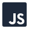

<link rel="stylesheet" href="../css/sobre.css"></link>

<section id="about">

    <div id="bruno-ramos">
        <p>
        <h1>Olá!</h1>
        </p>
        <br>
        <em>
            <p>
                Meu nome é Bruno Ramos sou desenvolvedor desde 2020, com uma paixão profunda por
                desenvolvimento open source. Acredito firmemente no poder transformador da educação e do
                conhecimento. <br><br>

                Atualmente, estou focado em diversos projetos pessoais que me permitem explorar e aprimorar
                minhas habilidades em tecnologias de nuvem, como Azure, e em gerenciamento de banco de dados.
                Sempre em busca de novas oportunidades e desafios. <br><br>

                Minha jornada na programação começou com o desejo de construir soluções eficientes e inovadoras.
                Desde então, tenho trabalhado com uma variedade de tecnologias, contribuindo para projetos que
                impactam positivamente a experiência do usuário e a performance das aplicações.

                </br><br>


            </p>
        </em>

        <br>

    </div>
    <div id="skills">

        <p>
            Minhas skills:
        </p>
        <div>
            <div id="skills-icon">
                
                <span>Git</span>
            </div>
            <div id="skills-icon">
                
                <span>C#</span>
            </div>
            <div id="skills-icon">
                
                <span>Linux</span>
            </div>
            <div id="skills-icon">
                
                <span>javascript</span>
            </div>

            <div id="skills-icon">
                
                <span>Sql</span>
            </div>
        </div>

    </div>
</section>